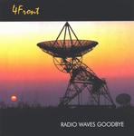

| Artist: | 4Front |
| Title: | Radio Waves Goodbye |
| Label: | Space Records |
| Length(s): | 54 minutes |
| Year(s) of release: | 2001 |
| Month of review: | [04/2002] |
| 1) | Airtime | 1.58 |
| 2) | Tunnel Vision | 5.54 |
| 3) | Hideaway | 3.21 |
| 4) | Special Patrol Group | 3.00 |
| 5) | Space Oddity 2001 | 6.34 |
| 6) | Burial At Sea | 5.13 |
| 7) | Fuse | 4.05 |
| 8) | Learning To Crawl | 5.53 |
| 9) | 747 | 2.21 |
| 10) | Memories Of Kansas | 5.51 |
| 11) | Descent | 5.24 |
| 12) | Radio Waves Goodbye | 4.32 |
Eeeeek! Hideaway starts with a very country style intro, to get even seedier from that.
Special Patrol Group is a hodgepodge of styles, hard rocky guitars, hammond organ, moog, weewy keyboards, to top it off with a ska like rhythm (pretty much like Dutch band Doe Maar). The end result still sounds a pretty complete and allround track, though. Nice one.
Space Oddity 2001, amazingly, is a cover of the Bowie track, including the vocals. This rendition is a bit more of a modern version, which does sound pretty fresh, even though more or less the same arrangement is used as in the original, expect for the somewhat apocalyptic final. In the booklet they also mention Peter Schilling's Major Tom, for no apparent reason, since this is a completely different song of which I don't recognize any part in this track. It is about the same subject, though.
Burial At Sea is another instrumental track that doesn't focus on a particular instrument, with keyboards, violins and guitars taking the lead alternatingly. Nice one
Fuse is led by a neurotic keyboard, which gets the guitar going in the same way. Lot of muscles on this one. The blaring keybaords toward the end also don't help the track much.
Learning To Crawl is a more pure jazzrock track. Strumming bass feel dosed drums, and a hooty sax, later replaced with, somewhat bluesy, guitaring with submissive bass and drums, as heard before. A little too often. But before the reprieve of the tracks end we get a shift into a sort of Koinonia happiness, which is just as unwelcome as what was before, followed by the blaring sax again. Not all that interesting a track for anyone who's progressed to walking.
747 takes off with a beefy rhythm, kind of funny, attacked by guitaristics and keyboardistics which take the spunk out of the rhythm. This is a very happy one.
I don't fancy Memories Of Kansas to be about any place on the map; the general atmosphere of this track hints towards Kansas to say the least, strongly helped by the violin, to the point where Kansas is quoted a couple of times. Despite that, the track can stand up as an homage to Kansas without being a rip off.
Descent starts nicely with some keyboard experiments that sound melodic enough, but is followed up by another guitar fest, which sounds more routine than inspiration. This isn't helped by the almost silly sounding bass lines in the back.
If you are of the opinion that the title track of an album sums the total, this is a jazzrock album, with some slight progressive influences, since that is the style of closer Radio Waves Goodbye. Sort of okay, but not all that interesting.